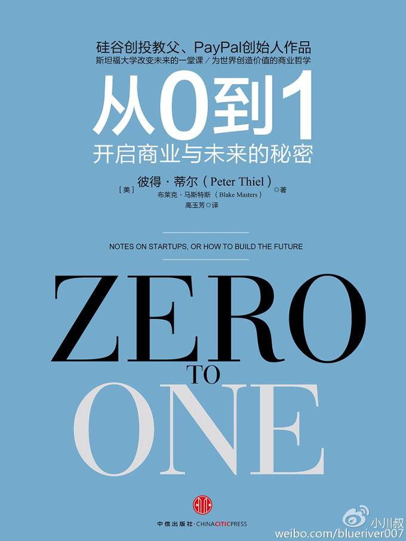

注：【】部分为笔者心得，非原文摘抄。
- 成功人士总能在意想不到的地方发现价值，他们遵循的是基本原则，而非秘籍。
- 科技不仅仅限于计算机技术。任何新方法，任何可以使事情更易完成的方法都是科技，这才是对科技的正确理解。
- 一个孤独的天才可能创造出经典的文学艺术作品，却不能创造出整个产业。
- 初创公司遵守这样一个原则，你需要和其他人合作来完成工作，但也需要控制规模，使组织有效运转。
- 新公司最重要的力量是新思想，新思想甚至比灵活性更重要，而规模小才有思考的空间。
- 每个初创公司都必须做这场思维运动：质疑现有观念，从零开始重新审视自己所从事的业务。
- 个人发生精神错乱很少见，但对群体、政党、国家、时代而言，精神错乱却很普遍。——尼采
- 自称可以成大事的人都不可信。
- 事先规划通常既死板又不现实。相反，应该做些尝试，反复实践，把创业当成未知的实验。
- 大胆尝试胜过平庸保守；坏计划也好过没有计划；竞争性市场很难赚钱；营销和产品同样重要。
- 创造价值还不够，你还必须抓得住自己创造的部分价值。
- 如果你想创造并获得持久的价值，不要只是跟风建立一个没有特色的企业。
- 不管是垄断者还是竞争者，都乐于歪曲事实来维护自己的利益。
- 要想将企业从每日的生存竞赛中解脱出来，唯一的方法就是：获取垄断利润。
- 每个垄断企业都是靠解决一个独一无二的问题获得垄断地位；而企业失败的原因却相同：它们都无法逃脱竞争。
- 创造性垄断就是新产品既让大众受益，又可以给创造者带来长期利润。
- 在所有人类冲突的戏码中，人们往往忽视了真正重要的事情，只把精力放在竞争对手身上。
- 把技能运用到实际中时，你就不会那么容易放弃自己的信念：这可以使你免于陷入追求虚名浮利的竞争当中。
- 胜利肯定比失败好，但是如果这场战役不值得打，那每个参与者就都是输家。
- 如果你不能把对手打败，那就和对手联合。
- 如果你能看出竞争不能带来价值的提升，而是充满破坏力，那你就比大多数人要理智。
- 企业成功与否要看它在未来生成现金流的能力。
- 企业今天的价值是它以后创造利润的总和（正确估价一家企业，还要把未来现金流折算成今天的价值，因为相同额度的资金现值要比期值更有价值）。
- 任何公司在于同等实力的竞争者竞争时都会造成利润流失。
- 垄断企业都有以下几个特点：
- 专利技术
- 专利技术是一家公司最实质性的优势，它使你的产品很难或不能被别的公司复制；
- 一般而言，专利技术在某些方面必须比它最接近的替代品好上 10 倍才能拥有真正的垄断优势；
- 要做出 10 倍改进，最明确的方法就是创造全新的事物；
- 网络效应
- 除非产品在网络群组规模尚小时对初期用户已经具有价值，否则无法收到网络效应；
- 规模经济
- 好的初创企业在刚开始设计时就应该考虑到之后的大规模发展潜能；
- 品牌优势
- 一家公司最显而易见的垄断是对自己品牌的垄断，因此打造一个强势品牌是形成垄断的有力方式；
- 没有科技公司可以只靠品牌发展。
- 专利技术
- 品牌、规模、网络效应和科技的科技的组合可以打造一家垄断公司，但是要想使公司运行起来，还需要仔细选择市场，谨慎扩大范围。
- 一个初创公司完美的目标市场是特定的一小群人，而且几乎没有其他竞争者与你竞争。任何大的市场都是错误的选择，而且已经有其他竞争者存在的大市场更糟糕。
- 残酷的竞争会吞噬掉你全部的利润。
- 市场需要有纪律地逐步扩大。最成功的公司会先在一个特定的利基市场里占据主导，然后扩展到相近市场。
- 如果你认为自己是对抗黑暗势力的起义者，就很容易过分专注于道路上的阻碍。但如果你真想创造新的事物，那就去创造，创新的行为远比旧产业不喜欢你的创新来得重要。
- 如果你准备扩张到相邻市场，不要“破坏”，要尽可能地躲开竞争。
- 先行一步只是个策略，不是目标。真正重要的是在未来产生现金流。
- 要想赢，首要工作就是研究残局。——何塞·劳尔·卡帕布兰卡
- 浅薄的人才会相信运气和境遇……强者只相信因果。——拉尔夫·瓦尔多
- 明确的愿景可以坚定人的信念。与其努力成为一个各方面都一知半解的庸才，还美其名曰“全能人才”，一个目标明确的人往往会选择一件最该做的事，并专心去做好这一件事。
- 乐观的人迎接未来，悲观的人害怕未来。
- 每个伟大的企业家都首先是一位设计师。
- 风险投资中最大的秘密是：成功基金的最佳投资所获的回报要等于或超过其它所有投资对象的总和。
- 将全部注意力放在擅长的事情上，而且在这之前要先仔细想一想未来这件事情是否会变得很有价值。
- 不探索是发现不了秘密的。
- 成功的企业建立与开放却未知的秘密之上，这秘密关乎世界如何运作。
- 只有相信并探索秘密才能发现常规之外的，近在眼前却不为常人所见的商机。
- 除非你的理念完全符合习俗，否则将你所知道的一切告诉每个人绝不是什么好主意。
- 基础没有打好的初创企业是无法挽救的。——“蒂尔定律”
- 创始人在共同创业前应有深厚的交情，否则就是在碰运气。
- 要对创始人和投资人在公司的权力上进行正式界定。
- 要找到公司内部不团结的原因，分清以下三个概念很有用：
- 所有权：谁在法律上拥有公司的资产？
- 经营权：谁实际上在管理着公司的日常事务？
- 控制权：谁在形式上管理公司的事务？
- 初创公司的矛盾大多出现在所有权和控制权之间，即董事会的创始人和投资人之间。
- 董事会，人越少越好。董事会越小，董事们越容易沟通，达成一致，并进行有效监督。然而，这种有效意味着在任何冲突中，小型董事会都可以赶管理层下台。这就是慎重选择董事至关重要的原因：董事会里的每个成员都是举足轻重的。
- 三人董事会最为理想。除非你的公司已经上市，否则，董事会不要超过 5 个人。
- 【对于低层员工应实行（相对行业平均水平的）高工资、低股权；对高层员工则应反之。】
- 高额的现金报酬会让员工取走公司已有的价值，而不是投入时间为未来创造新的价值。
- 任何用现金支付的薪资都关乎现在，而非着眼未来。
- 由于分配所有权时很难达到绝对的公平，创始人需做好细节保密工作。
- 股票虽然不是激励员工的最佳方法，却是创始人使公司保持团结一致的最好方法。
- 只要公司创新，创业就还没结束，一旦创新停止，创业也就结束了。
- 初创公司是肩负同一使命的一个团体，企业文化的好坏取决于内涵。
- 时间是最宝贵的资产，将时间浪费在不能长久合作的人身上得不偿失。
- 雇佣真正喜欢团队合作的人。他们必须有才华，但更为重要的是，他们要由衷地喜欢与我们共事。
- 招聘是每家公司的核心竞争力，不应该外包出去。
- 如果你能解释为什么公司使命激动人心，那么你就能吸引你需要的员工。不是解释工作的重要性，而是解释为什么你在做别人从未想过要做的重要事情。这是唯一能让你的理由变得独特的方法。
- 让初创公司员工与外人不同的就是 T 恤和卫衣上印着的公司标志。
- 内部和谐是初创公司存活的关键。每个公司本身就是一个生态系统，派别冲突会使其无力应付外部威胁。
- 成功的初创公司对其它公司不理解的事有非常正确的看法。你不必担心公司得不到传统专业人士的认可，被外人称为邪教，甚至是黑帮也不是件坏事。
- 人们高估了科技与工程工作的难度，实在是因为这些领域的挑战显而易见。而销售人员在背后要付出很多才能使销售工作看起来容易进行，而这些往往被技术精英忽视。
- 销售人员的第一要务是说服，而不是真诚。
- 你发明了新产品却没有有效的方式推销，那么你的生意将很难做下去——无论你的产品质量有多好。
- 即使产品没有差异，高超的销售和推销自身也可以形成垄断，反之则不行。
- 有效推广的界定是在与客户保持联系期间，从每个客户那里赚取的平均总净利（客户生命期价值，CLV）必须超过赢得新客户的平均成本（客户获取成本，CAC）。
- 广告对初创公司只有在客户获取成本和客户生命期价值在任何其它推广渠道都不经济的情况下才奏效。
- 初创公司应该抵制住和大公司进行广告竞争的诱惑。
- 如果产品的核心功能可以鼓励用户邀请其他朋友成为用户，那么这个产品才能进行病毒式营销。
- 谁最先占领有病毒式营销前景的细分市场，谁就能成为整个市场的定局者。
- 公司需要推销的不只是产品，你还必须向员工和投资者推销你的公司。把公司推销给媒体是推销给其他人的必要前提。
- 相对优势差异巨大时，贸易利益最大。
- 科技是在全球化的世界中逃避竞争的唯一方式。
- 对遥远未来的不确定的恐惧不应阻止我们现在制定明确的计划。
- 这些问题是每个公司必须回答的：
- 工程问题
- 你的技术具有突破性，而不仅仅是稍有改进吗？
- 时机问题
- 现在开创事业，时机合适吗？
- 垄断问题
- 开创之初，是在一个小市场抢占大份额吗？
- 人员问题
- 你有合适的团队吗？
- 销售问题
- 除了创造产品，你有没有办法销售产品？
- 持久问题
- 未来 10 年或 20 年，你能保住自己的市场地位吗？
- 秘密问题
- 你有没有找到一个其他人没有发现的独特机会？
- 工程问题
- 优秀的技术公司，其拥有的专有技术应该比最相近的技术高一个数量级。
- 公司必须力争做到 10 倍的改进，稍有改进对终端用户来说就是毫无改进。
- 如果你不能就垄断小市场拿出独特的解决方案，就无法摆脱恶性竞争。
- 夸大独特性并不能解决垄断问题。
- 绝不给首席执行官西装革履的技术公司投资。
- 每个企业家都应该计划做自己特定市场的坚守者。一开始就要先自问：10 年、20 年后世界会是什么样的？我的公司如何才能与之相适应？
- 每个失败者都运用被普遍认可的观念来描述自己的璀璨未来。但是为大企业是构筑在秘密之上，这是它们取得成功的独特原因，而别人对此却一无所知。
- 企业家只有从微观入手提出自己的计划，才能从宏观的见解中获益。
- 由特立独行的人领导公司比普通的经理领导公司更为有力，同时也更为危险。
- 特立独行的个性是驱动公司进步的引擎。
- 每个名人都在建立并培养自己的个人品牌。
- 被高度关注的成功可以带来高度集中的攻击。
- 独树一帜的创始人能做出权威决策，激发员工强烈的忠诚度，提前做出未来几十年的规划。自相矛盾的是，由训练有素的专业人士组成的毫无人情味的官僚机构虽能够长久持续下去，却鼠目寸光。
- 创始人应该汲取的教训是不要沉醉于自己的声望和他人对自己的追捧，否则，会使自己臭名远播，或是被妖魔化——因此，要小心行事。
- 不要高估自己的能力。
- 创始人的重要性并非源于自身工作带来的价值，事实上，优秀的创始人能使公司的每个人发挥所长。
- 创始人最大的危险是对自己的神话过于肯定，因而迷失了方向。同样，对于公司，最大的危险是不再相信创始人的神话，错把不信神话当作一种智慧。
- 【要成为一名合格的创始人，首先要吃的苦就是保持强劲的学习动力，即使不能在所有领域成为顶尖的专家，但至少不能在任何一个领域被人忽悠。作为程序员，我最讨厌听到的回答是“编译器会去优化。”作为创始人，我想我最讨厌听到的应该是“下面的人会去做。”】